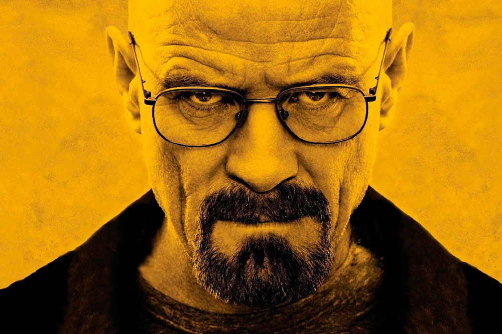
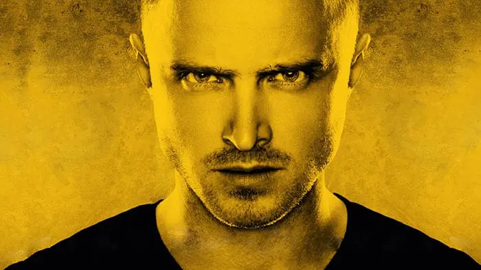

Información sobre los protagonistas de la serie
Walter White

Walter Hartwell White (apodado Heisenberg), es un personaje ficticio y protagonista de la serie de televisión estadounidense Breaking Bad. El personaje es interpretado por el actor Bryan Cranston.
Es presentado como un químico graduado del Instituto de Tecnología de California, quien cofundó la empresa Gray Matter Technologies. Dejó Grey Matter abruptamente, vendiendo sus acciones por $5,000. Poco después, la compañía hizo una fortuna, en gran parte gracias a la investigación de Walt. Posteriormente, Walt se mudó a Albuquerque, Nuevo México, donde se convirtió en profesor de química en la escuela secundaria. En su 50 cumpleaños, se le diagnostica cáncer de pulmón en estadio IIIA. Después de este descubrimiento, Walt recurre a la fabricación y venta de metanfetaminas con un ex alumno, Jesse Pinkman (Aaron Paul), para garantizar la seguridad económica de su familia después de su muerte. Se sumerge cada vez más en el tráfico de drogas ilícitas, volviéndose más despiadado a medida que avanza la serie, y luego adopta el alias "Heisenberg", que se vuelve reconocible como una figura clave en el tráfico de drogas del suroeste.
Tanto el personaje como la actuación de Cranston han recibido elogios de la crítica y White se menciona con frecuencia como uno de los personajes televisivos más grandes e icónicos de todos los tiempos. Cranston ganó cuatro premios Emmy como actor principal destacado en una serie dramática, tres de ellos consecutivos. Es el primer actor en ganar un Critics' Choice, Golden Globe, Primetime Emmy y Screen Actors Guild Award por su actuación. Cranston repitió el papel de Walt en un flashback de la secuela de Breaking Bad, El Camino, y lo repitió de nuevo en la sexta y última temporada de la serie precuela Better Call Saul, convirtiéndolo en uno de los pocos personajes que aparecen en las tres producciones, junto a Jesse Pinkman, Mike Ehrmantraut (Jonathan Banks) y Ed Galbraith (Robert Forster).
Jesse Pinkman

Jesse Pinkman es un personaje ficticio creado por Vince Gilligan e interpretado por Aaron Paul en la serie de Breaking Bad. Jesse es un traficante de metanfetaminas exalumno del protagonista de la serie, Walter White, quien se convierte en su socio, ayudándolo a ganar dinero para dejarlo a su familia antes que muera por su cáncer de pulmón.
Jesse es el único personaje además de Walt que aparece en todos los episodios del programa. Paul repitió el papel para la película derivada de 2019 El Camino: A Breaking Bad Movie, una secuela de la serie ambientada después de su final, y nuevamente en 2022 para la sexta y última temporada de la serie precuela Better Call Saul, siendo uno de los pocos personajes que aparecen tanto en los programas como en la película.